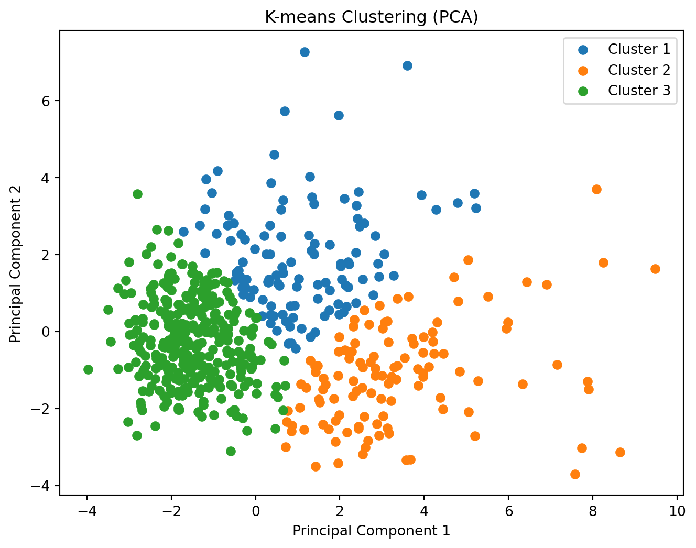

# Import our necessary libraries/modules
import pandas as pd
import numpy as np
from sklearn.cluster import KMeans
import matplotlib.pyplot as plt
from sklearn.preprocessing import StandardScaler
from sklearn.decomposition import PCAK-Means Clustering
Clustering is a fundamental technique in data analysis and machine learning that involves grouping similar data points together. These techniques are often used in breast cancer studies and analysis to identify groups and subgroups based on various characteristics among breast cancer patients. Visualizing this information in clusters can assist health experts in identifying potential groups of patients at risk of breast cancer. One particular clustering algorithm is K-means. This clustering algorithm helps to identify similar characteristics among various data points by selecting a K-value to represent how many clusters you wish to utilize in a study. The code below shows how K-means works using a breast cancer dataset.
Code & Visuals
# Read in the dataset using Pandas
data = pd.read_csv('breast-cancer.csv')
data.head()| id | diagnosis | radius_mean | texture_mean | perimeter_mean | area_mean | smoothness_mean | compactness_mean | concavity_mean | concave points_mean | ... | radius_worst | texture_worst | perimeter_worst | area_worst | smoothness_worst | compactness_worst | concavity_worst | concave points_worst | symmetry_worst | fractal_dimension_worst | |
|---|---|---|---|---|---|---|---|---|---|---|---|---|---|---|---|---|---|---|---|---|---|
| 0 | 842302 | M | 17.99 | 10.38 | 122.80 | 1001.0 | 0.11840 | 0.27760 | 0.3001 | 0.14710 | ... | 25.38 | 17.33 | 184.60 | 2019.0 | 0.1622 | 0.6656 | 0.7119 | 0.2654 | 0.4601 | 0.11890 |
| 1 | 842517 | M | 20.57 | 17.77 | 132.90 | 1326.0 | 0.08474 | 0.07864 | 0.0869 | 0.07017 | ... | 24.99 | 23.41 | 158.80 | 1956.0 | 0.1238 | 0.1866 | 0.2416 | 0.1860 | 0.2750 | 0.08902 |
| 2 | 84300903 | M | 19.69 | 21.25 | 130.00 | 1203.0 | 0.10960 | 0.15990 | 0.1974 | 0.12790 | ... | 23.57 | 25.53 | 152.50 | 1709.0 | 0.1444 | 0.4245 | 0.4504 | 0.2430 | 0.3613 | 0.08758 |
| 3 | 84348301 | M | 11.42 | 20.38 | 77.58 | 386.1 | 0.14250 | 0.28390 | 0.2414 | 0.10520 | ... | 14.91 | 26.50 | 98.87 | 567.7 | 0.2098 | 0.8663 | 0.6869 | 0.2575 | 0.6638 | 0.17300 |
| 4 | 84358402 | M | 20.29 | 14.34 | 135.10 | 1297.0 | 0.10030 | 0.13280 | 0.1980 | 0.10430 | ... | 22.54 | 16.67 | 152.20 | 1575.0 | 0.1374 | 0.2050 | 0.4000 | 0.1625 | 0.2364 | 0.07678 |
5 rows × 32 columns
# Extract the features that we are interested in for the model/analysis
selected_features = [
'radius_mean', 'texture_mean', 'perimeter_mean', 'area_mean',
'smoothness_mean', 'compactness_mean', 'concavity_mean', 'concave points_mean',
'symmetry_mean', 'fractal_dimension_mean'
]
X = data[selected_features]
X.head()| radius_mean | texture_mean | perimeter_mean | area_mean | smoothness_mean | compactness_mean | concavity_mean | concave points_mean | symmetry_mean | fractal_dimension_mean | |
|---|---|---|---|---|---|---|---|---|---|---|
| 0 | 17.99 | 10.38 | 122.80 | 1001.0 | 0.11840 | 0.27760 | 0.3001 | 0.14710 | 0.2419 | 0.07871 |
| 1 | 20.57 | 17.77 | 132.90 | 1326.0 | 0.08474 | 0.07864 | 0.0869 | 0.07017 | 0.1812 | 0.05667 |
| 2 | 19.69 | 21.25 | 130.00 | 1203.0 | 0.10960 | 0.15990 | 0.1974 | 0.12790 | 0.2069 | 0.05999 |
| 3 | 11.42 | 20.38 | 77.58 | 386.1 | 0.14250 | 0.28390 | 0.2414 | 0.10520 | 0.2597 | 0.09744 |
| 4 | 20.29 | 14.34 | 135.10 | 1297.0 | 0.10030 | 0.13280 | 0.1980 | 0.10430 | 0.1809 | 0.05883 |
We standardize the data so that there isn’t a particular feature that exhibits more influence over the others.
# Standardize the features of interest to have mean = 0 and sd = 1
scaler = StandardScaler()
X_scaled = scaler.fit_transform(X)
X_scaledarray([[ 1.09706398e+00, -2.07333501e+00, 1.26993369e+00, ...,
2.53247522e+00, 2.21751501e+00, 2.25574689e+00],
[ 1.82982061e+00, -3.53632408e-01, 1.68595471e+00, ...,
5.48144156e-01, 1.39236330e-03, -8.68652457e-01],
[ 1.57988811e+00, 4.56186952e-01, 1.56650313e+00, ...,
2.03723076e+00, 9.39684817e-01, -3.98007910e-01],
...,
[ 7.02284249e-01, 2.04557380e+00, 6.72675785e-01, ...,
1.05777359e-01, -8.09117071e-01, -8.95586935e-01],
[ 1.83834103e+00, 2.33645719e+00, 1.98252415e+00, ...,
2.65886573e+00, 2.13719425e+00, 1.04369542e+00],
[-1.80840125e+00, 1.22179204e+00, -1.81438851e+00, ...,
-1.26181958e+00, -8.20069901e-01, -5.61032377e-01]])# Perform k-Means clustering using k = 3 clusters on the data
k = 3
kmeans = KMeans(n_clusters=k, random_state=0)
kmeans.fit(X_scaled)KMeans(n_clusters=3, random_state=0)# Visualize the labels
data['Cluster'] = kmeans.labels_
data['Cluster'].head()0 0
1 1
2 1
3 0
4 1
Name: Cluster, dtype: int32We can scale the data using PCA to simplify complex data with many features as well as for visualization purposes.
# Use PCA to scale the data down to 2 dimensions on the standardized data
pca = PCA(n_components=2)
X_pca = pca.fit_transform(X_scaled)# Plot the clusters from our k-Means clustering algorithm
plt.figure(figsize=(8, 6))
for cluster in range(k):
plt.scatter(X_pca[data['Cluster'] == cluster, 0], X_pca[data['Cluster'] == cluster, 1], label=f'Cluster {cluster + 1}')
plt.title('K-means Clustering (PCA)')
plt.xlabel('Principal Component 1')
plt.ylabel('Principal Component 2')
plt.legend()
plt.show()
As it can be seen in the code and the visualization, we are utilizing K = 3 clusters and 2 PCA components for this study. We can see that there are 3 distinct groups in the cluster shown, with each data point in each cluster sharing similar characteristics with each other. The data in our study was first standardized so that no single feature dominates the analysis; equal importance is given to all features in the data. Next, Principle-Component-Analysis (PCA) is performed on the standardized data points to scale the data down to 2 dimensions.
This technique is often used so that complex data with many features can be simplified for understanding, visualization, and for interpretation of the data. In this study, PCA was performed to visualize our data clusters using 2 dimensions, which are our axes.The K-means algorithm was ultimately able to place various data points into groups based on their characteristics in a clean and organized manner, as per the visualization.
The DBSCAN Clustering Algorithm Comparison
K-Means is a powerful algorithm for grouping data. The algorithm however has various limitations. It is sensitive to noisy data as it assigns each point to the nearest centroid; outliers can significantly influence the centroids’ positions. There are several other clustering algorithms that function similarly as well. Another particular clustering algorithm is Density-Based Spatial Clustering of Applications with Noise (DBSCAN). DBSCAN groups data points based on their density. It forms clusters around areas with high data density while marking outliers as noise. It’s effective for discovering clusters of erratic/unpredictable shapes.
DBSCAN is different from K-Means because it doesn’t need you to guess how many groups there are in the data. Instead, it figures out the groups based on where the data points are huddled together. DBSCAN can find groups of various shapes and sizes, and it’s not too bothered by some noisy or scattered data points. K-Means clustering, on the other hand, needs you to tell it how many groups you think there are in advance and assumes the groups are all about the same size and shape. DBSCAN is often more accurate than K-Means when dealing with real-world data because it can handle different shapes of groups and noisy data more effectively.